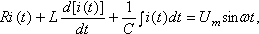

|
–уководству€сь компонентными уравнени€ми элементов схемы
и записав дл€ неЄ уравнени€ законов ирхгофа, получают систему интегрально-дифференциальных уравнений типа  причем права€ часть этих уравнений содержит гармонические функции времени, а в левой части уравнений кажда€ синусоидально измен€юща€с€ величина (при заданной угловой частоте ω) содержит два неизвестных параметра (амплитуду и начальную фазу). —ледовательно, задача анализа линейной электрической цепи в установившемс€ режиме (а в этой теме ограничимс€ рассмотрением только этого режима, не учитыва€ переходные процессы) при гармоническом воздействии сводитс€ к решению системы линейных дифференциальных уравнений с посто€нными коэффициентами, правыми част€ми которых €вл€ютс€ гармонические функции времени одной и той же частоты. ƒл€ решени€ этих уравнений используют:
|